CREATIVE PORTFOLIO / 2026
伝えるために、つくってきたもの。 企業・事業を理解し、伝わるかたちへ。
Takumi Arai
WEB / VIDEO / DTP DIRECTION / DESIGN / DEVELOPMENT
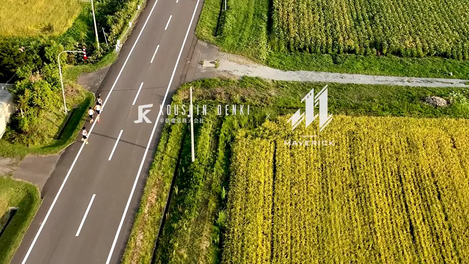
挑戦が、 FEATURED INTEGRATED / RECRUITMENT 幸信電気 スポンサー活用プロジェクト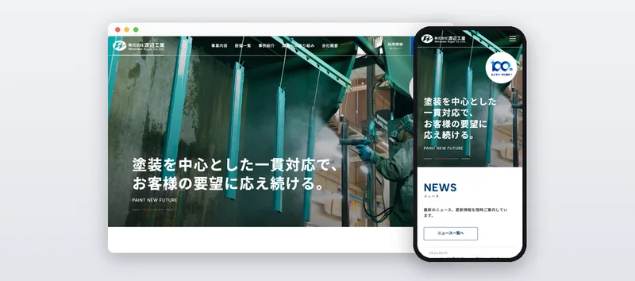
WEB / CORPORATE 渡辺工業 コーポレートサイト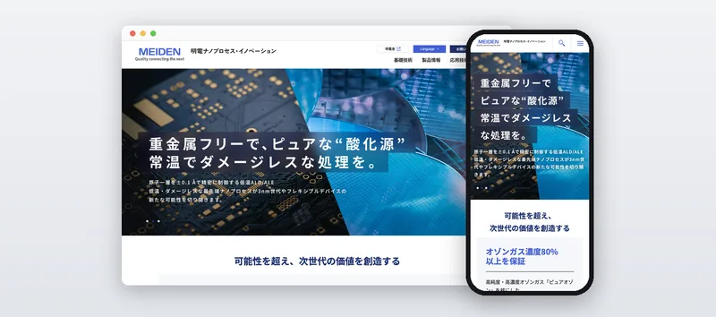
WEB / GROUP SITES 明電舎グループ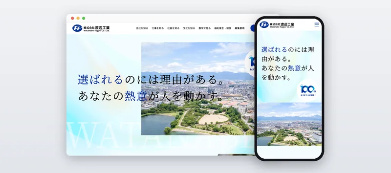
WEB / RECRUITMENT 渡辺工業 採用サイト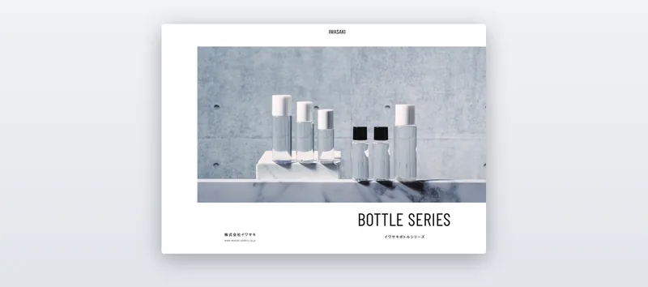
DTP / PRODUCT CATALOG イワサキ 製品カタログ
理解することから、伝わる をつくる。 誰に、何を伝えるのか。
Selected Works制作実績 完成したものと、その背景にある判断。
FEATURED PROJECT 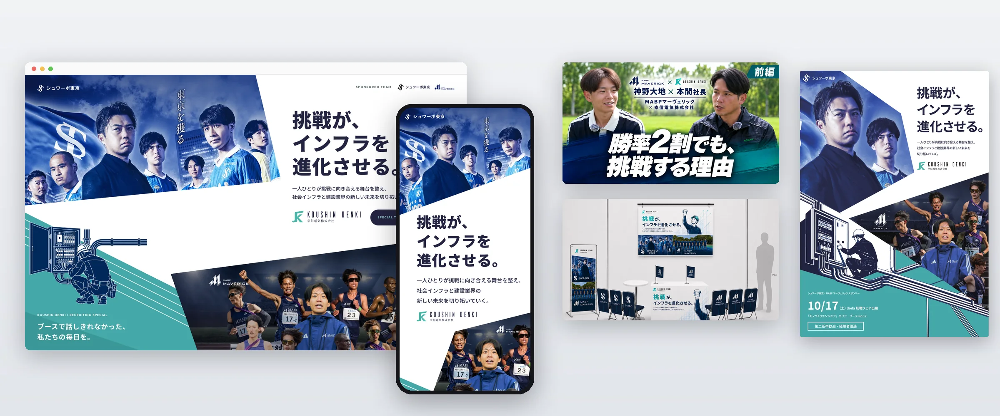
決まっていた対談を起点に、動画・LP・チラシ・ノベルティ・プレス発信までを、一つのメッセージでつなぐ。
対談動画（前編・後編） 2
ショート動画 10
ノベルティ 3
プレスリリース 2 担当 企画・見積もり コンセプト・コピー 撮影ディレクション 動画編集 デザイン・LP実装 DTP PR
技術・設備・事例を、発注側が検討できる情報へ。
担当 情報設計 原稿 デザイン 実装 計測・分析 SEO・保守
仕事内容と社風を、働く姿が想像できる情報へ。
担当 情報設計 コピー・原稿 デザイン コーディング 運用・分析
専門性の高い技術を理解し、情報の順序と導線へ反映。
担当 事業理解 情報設計・導線 コピー・画像提案 デザイン 撮影ディレクション
取引先の美容系ブランドが、自社の製品をイメージできる写真と構成へ。
担当 構成・情報整理 撮影準備・手配 印刷進行 改修・増刷
採用方針に合わせた撮影と、公開後の保守・分析支援。
担当 撮影ディレクション 保守 GTM・計測 分析レポート インタビュー刷新
企業理解と働く姿を伝える、採用の共通資料を制作。
担当 ワイヤーフレーム デザイン方針 外部デザイナー選定・進行
More WorksWeb・動画・DTPを横断する制作 そのほかの制作プロジェクト。
08 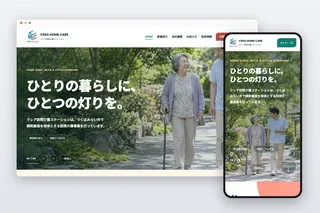
WEB / CORPORATE & RECRUITMENT / 2026 クレア コーポレート・採用サイト 提案 / ワイヤーフレーム / デザイン方針 / 実装 / ドメイン移管 09 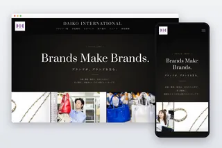
WEB / CORPORATE & RECRUITMENT / 2026 大幸インターナショナル コーポレート・採用サイト 提案 / コピー / デザイン / 撮影ディレクション / 原稿 / 実装・計測 10 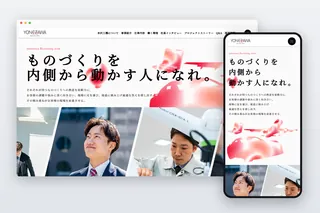
WEB / RECRUITMENT / 2026 米沢工機 採用サイト刷新 コピー / ワイヤーフレーム・デザイン / 撮影企画・レタッチ / 原稿 / 計測 11 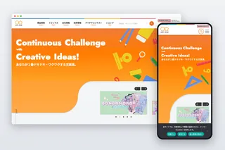
WEB / OPERATION / 2023–2026 サンスター文具 公式サイト運用・改修 運用設計 / 外部パートナー連携 / 改修実装 / 不具合調査 12 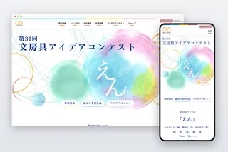
WEB / CAMPAIGN / 2026 サンスター文具 文房具アイデアコンテスト第31回 実装 / 軽量化 / 受付終了対応 13 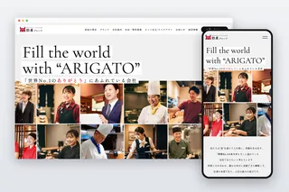
WEB / CORPORATE & OPERATION / 2025–2026 松屋グループ グループ公式サイト・保守 内容整理 / デザイン / チャットボット実装 / 保守 14 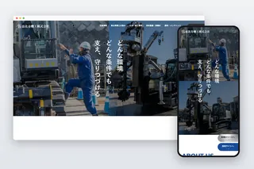
WEB / CORPORATE & RECRUITMENT / 2023–2024 恵比寿機工 コーポレート・採用サイト 情報設計 / ワイヤーフレーム / 撮影手配 / 原稿 / 外部パートナー連携 15 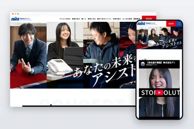
WEB & VIDEO / RECRUITMENT / 2024–2025 アシスト 採用サイト・採用動画 Web・動画の進行 / 撮影手配 / 外部パートナー連携 16 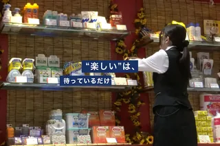
VIDEO / RECRUITMENT / 2026 東和産業 新卒採用動画 提案 / 設問・構成・絵コンテ / 撮影 / 動画編集 17 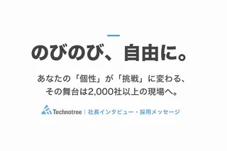
VIDEO / RECRUITMENT / 2026 テクノツリー 社長インタビュー採用動画 提案 / インタビュー構成 / 撮影ディレクション / 動画編集 18 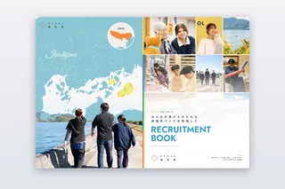
DTP / RECRUITMENT / 2026 楽生苑 採用パンフレット 構成 / 表紙案 / 誌面デザイン / 入稿データ作成 19 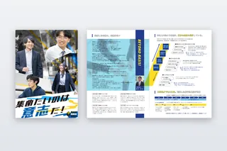
DTP / RECRUITMENT / 2026 レイシスソフトウエアーサービス 採用パンフレット ワイヤーフレーム・構成ラフ / デザインディレクション / 修正進行 20 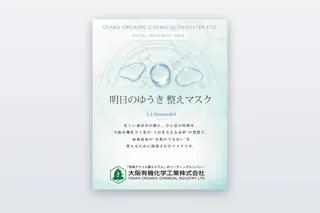
DTP / NOVELTY / 2026 大阪有機化学工業 ノベルティのフェイスマスク個包装ラベル デザイン修正 / ボディコピー / 案の調整
Capabilities
考える。つくる。 顧客の要望を整理し、制作の現場へ。
01 / 04
01 Direction & Planning 企画・情報設計・制作進行
顧客の課題・要望から、企画提案・見積もり、情報設計・コピーへ具体化。パートナーのアサイン、制作進行・品質・費用管理まで担います。パンフレット・カタログなどDTPの構成・印刷進行にも対応します。Figma / Project Management / Copywriting
02 Design & Development デザイン・コーディング
FigmaでのWebデザイン、WordPressのテーマ作成・修正に対応。案件に応じて構成・原稿・デザイン・実装を一貫して担当し、運用の条件も踏まえて制作します。Figma / Adobe XD / Photoshop / Illustrator / HTML / CSS / JavaScript / PHP / WordPress
03 Photo & Video Direction 撮影ディレクション・動画編集
構成・撮影イメージの整理、ロケハン、カメラマンのアサイン、撮影進行を担当。Premiere Proでの編集、After Effectsでの動画・サイト用アニメーション制作、Lightroomでの撮影データの色調整、Photoshopでの不要物除去・合成にも対応します。Premiere Pro / After Effects / Lightroom / Photoshop / Shooting Direction
04 Analytics & Support 計測・分析・公開後の支援
Googleアナリティクス（GA4）・Googleタグマネージャー（GTM）・Microsoft Clarityを使い、お問い合わせの送信やボタンのクリックなどの効果計測を設計・実装。更新・保守、分析レポートの提供、改善提案まで継続して対応します。GA4 / GTM / Microsoft Clarity
Takumi新井 拓海 WEB, VIDEO & DTP DIRECTOR
所属 株式会社Coachers
制作領域 Web / 動画 / DTP 2023年4月に株式会社Coachersへ入社。採用関連のクリエイティブ制作を中心に、Webサイト・動画・DTP制作のディレクションに携わっています。
企業・事業・仕事・製品の特徴を理解し、対象者に伝わる情報と表現へ具体化することが強みです。案件に応じてデザイン・実装・動画編集を担い、公開後の更新、GA4・GTMなどによる計測設計、分析レポートの提供まで対応しています。
採用支援を起点に、企業ブランディング、イベント、営業支援へと制作領域を広げてきました。
Web / Video / DTP 採用・ブランディング・
Design & Implementation
WordPressのテーマファイルを自分で作成・修正できます。AIエージェントを併用し、オリジナルのテーマやプラグインを一から構築することもあります。
経歴・案件情報：2026年10月17日更新